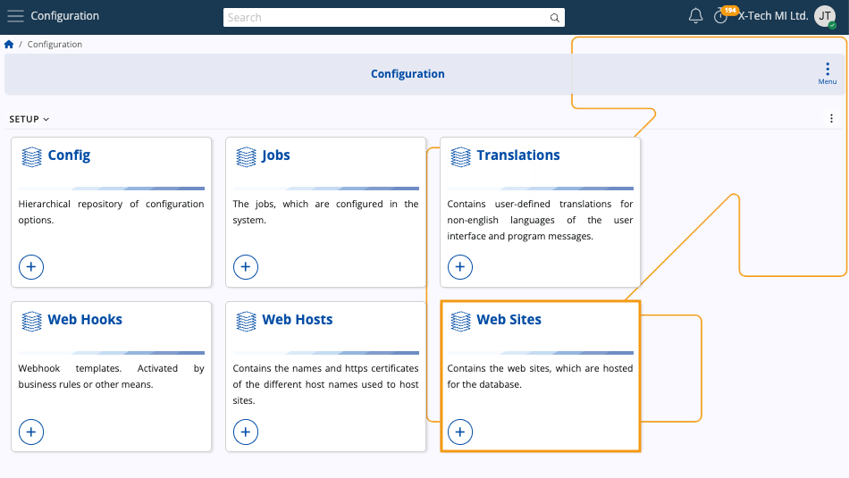
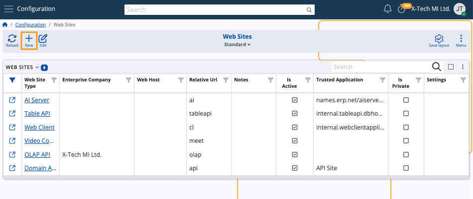
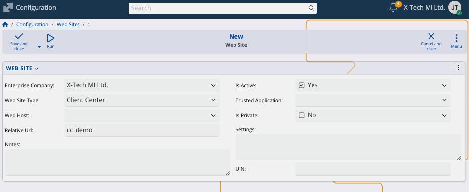
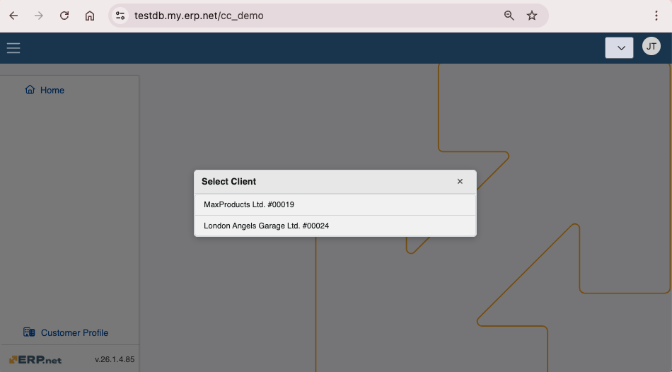

How to set up a Client Center
This article provides a step-by-step guide on creating a Client Center website through ERP.net.
Note
As of ERP.net version 26, website configuration takes place under System -> Configuration -> Web Sites.
For version 24, you can find the Web Sites panel under Setup -> Core.
Step by step process
To set up a website of Client Center type, navigate to the Web Sites panel within the Configuration section of the System module.

Then, click the New button to begin creating a new web site.

Website definition
Upon accessing the New Web Site form, you need to enter relevant data into the provided fields.

- Select the appropriate Enterprise Company for which the Client Center is created. The currently logged-in one is chosen by default.
- The only mandatory field is Web Site Type. In this case, it should be set to Client Center.
- Additionally, specify the Relative Url of the website, which is set to "cc" by default.
Tip
You should define a distinct site with a unique Relative URL for each Enterprise Company.
Specify settings that will apply to your Client Center website.
You can do this now or later when editing the web site. More information can be found below.
Once you are ready, click Save and reload.
The new Client Center website will be created and you can access it using the provided Relative Url.

Note
As of ERP.net version 26, the Trusted Application field no longer needs to be configured when creating a website. By default, it can be left empty, and the site will run under the internal SYSTEM user without consuming a license for its background service session. This behavior is now the recommended configuration.
Apply platform settings
Тhe Client Center can have certain settings applied for it. This includes visual and functional modifications.
Below are important settings you can apply to the Client Center:
The ability to reveal or hide the New Order module.
The ability to define which document types are shown in the Orders and the Invoices modules.
An extensive list of all settings can be found in the Settings and errors reference
JSON format definition
Client Center settings are defined in the Settings field of the Web Site creation form.
They must be configured in a key-value pair JSON format.
Example:
{"NewOrderDocumentType": "DocumentType.Id","IsNewOrderEnabled": false
"IsOrdersEnabled": true}
where
- NewOrderDocumentType takes the valid ID value of a new (sales) order.
- IsNewOrderEnabled defines if the module for order creation will be shown or hidden to the users when they log into the system (true meaning visible, false meaning restricted).
- IsOrdersEnabled determines whether the "Orders" section will be present in the Client center (true meaning visible, false meaning restricted).

Note
Whenever you apply or change settings for the Client Center, you need to restart the website through the Instance Manager.
User-level security
By default, the Client Center uses a system user known as System-Application-User. This user has rights to apply or change settings only in accordance with the normal functioning of the website. For better security, another more restricted user can be used.
The System-Application-User has System rights, but reflects used licenses as well. It’s automatically assigned whenever a new website is created and whenever a trusted application is added through the UI.
See next:
Note
The screenshots taken for this article are from v26 of the platform.